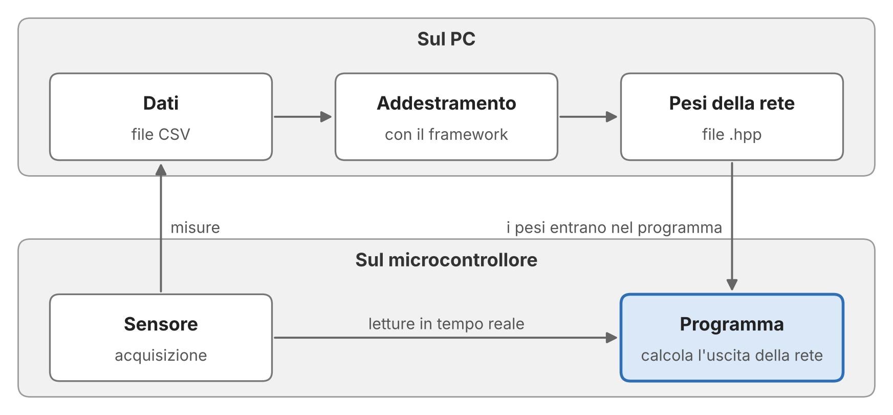

Programmazione Scientifica++: Lezione 11
Leggere e scrivere file, il formato CSV
Una rete su un microcontrollore
Alcuni di voi hanno proposto di portare la rete fuori dal PC:
- riconoscere le cifre tracciate in aria con una scheda ESP32 e un giroscopio;
- riconoscere le cifre tracciate davanti a sensori a ultrasuoni;
- una barriera d’allarme che distingue una persona da un animale;
- una scheda Arduino collegata a un sensore, per acquisire e analizzare misure.
ESP32 e Arduino sono microcontrollori: calcolatori completi su un solo chip (processore, memoria, ingressi e uscite), che costano pochi euro e leggono direttamente i sensori.
La domanda è se la rete che costruiamo nei laboratori possa funzionare su un dispositivo del genere.
Le risorse a disposizione
| PC portatile | ESP32 | Arduino Nano ESP32 | Arduino Uno R4 | |
|---|---|---|---|---|
| RAM | alcuni GB | 520 KB | 512 KB (+ 8 MB) | 32 KB |
| Flash | disco | 4 MB | 16 MB | 256 KB |
| Frequenza | alcuni GHz | 240 MHz | 240 MHz | 48 MHz |
| Sistema operativo | completo | minimo | minimo | nessuno |
| Costo | centinaia di € | 6–13 € | circa 20 € | circa 22 € |
Sotto i 10 € e simulati in Wokwi anche Raspberry Pi Pico (264 KB di RAM, 2 MB di flash) ed ESP32-C3 (400 KB, 4 MB). La rete dei laboratori, 784 → 128 → 10, ha 101 770 parametri: circa 407 KB in float, 102 KB a un byte per peso.
Dove stanno i pesi
- La RAM è la memoria di lavoro; la flash è la memoria permanente, che contiene il programma.
- I pesi non cambiano durante l’esecuzione. Dichiarati
const, restano nella flash e il programma li legge da lì, senza copiarli in RAM. In RAM servono solo gli ingressi e le uscite degli strati. - Senza
consti pesi verrebbero copiati in RAM all’avvio: i 407 KB della rete non entrano nemmeno nell’ESP32, che per i dati fissati in compilazione riserva al più 160 KB di RAM. - La flash non è tutta per i pesi: contiene anche il programma ed è divisa in partizioni. Sull’ESP32, con le impostazioni predefinite di Arduino, a programma e pesi restano circa 1,2 MB.
Dal PC al microcontrollore

Il microcontrollore acquisisce le misure; sul PC il framework addestra la rete; i pesi diventano un file .hpp che si compila nel programma del microcontrollore, un unico programma scritto di norma in C o C++, dove si calcola soltanto l’uscita della rete.
Reti neurali vicino al sensore
Per classificare misure basta una rete piccola. Una forma d’onda di 64 campioni, segnale o rumore, con una rete 64 → 16 → 2: 1074 parametri, circa 4 KB in float. Entra anche nell’Uno R4.
Perché non mandare i dati a un PC? Decidere sulla scheda conviene per:
- banda: si spediscono gli esiti, non tutti i campioni (la seriale porta circa 11 KB/s);
- latenza: si decide subito, senza il viaggio dei dati fino al PC e ritorno, e ogni volta nello stesso tempo: conta se la decisione deve comandare qualcosa;
- energia: trasmettere costa più che calcolare, e la batteria dura di più;
- autonomia: in campo possono mancare un PC e una rete.
È l’idea dei trigger negli esperimenti delle alte energie: reti neurali vicino al rivelatore scelgono in pochi microsecondi quali eventi registrare.
Perché il C++
- Su un microcontrollore ogni scelta del programma ha una conseguenza misurabile: quanta memoria occupa ogni oggetto, dove si trovano i dati, quanto tempo richiede ogni operazione. Il C++ permette di controllare tutti questi aspetti.
- Molte librerie di deep learning si usano da Python, ma sono scritte in C++: è il caso di PyTorch. In C e C++ sono scritte anche le librerie per le reti neurali sui microcontrollori.
- Un assistente di programmazione scrive codice in pochi secondi, ma non garantisce che il programma stia in 32 KB o in 520 KB, né che risponda in tempo. Per verificarlo bisogna conoscere il linguaggio.
Progetti finali con i microcontrollori
- Tra le tracce dei progetti finali ci saranno progetti con ESP32 e Arduino Nano ESP32 (un ESP32 in formato Arduino), a difficoltà crescente: la rete dei laboratori entra con i pesi in
float. - Sull’Arduino Uno R4 (32 KB di RAM, 256 KB di flash) la rete di MNIST entra solo con i pesi a un byte: bisogna anche quantizzarla, ed è un progetto molto difficile. Una rete piccola per le misure entra invece in
float. L’Arduino Uno classico (R3) è troppo piccolo per la rete. - I progetti con l’ESP32 si possono svolgere interamente con il simulatore Wokwi, gratuito e nel browser, senza acquistare nulla (il Nano ESP32 vi si simula come ESP32-S3). Wokwi non simula l’Uno R4: per quel progetto serve la scheda.
- La rete si addestra sempre con il framework sviluppato nei laboratori.
Quesito: flash e RAM
Rete 784 → \(h\) → 10: \(795\,h + 10\) parametri (1 KB = 1024 byte, 1 MB = 1024 KB).
- Quanti neuroni nascosti al massimo, perché i pesi stiano nella flash?
ESP32 (4 MB): \(h \le 1318\) infloat, \(h \le 5275\) a un byte; Nano ESP32 (16 MB): \(h \le 5275\) infloat; Uno R4 (256 KB): \(h \le 82\) infloat, \(h \le 329\) a un byte. Sono limiti teorici: la flash contiene anche il programma (slide «Dove stanno i pesi»). - Con \(h = 128\), quanta RAM serve per ingressi e uscite degli strati in
float?
\(784 + 128 + 10 = 922\) valori, 3688 byte (circa 3,6 KB): stanno nella RAM di tutte e tre le schede. - Nei laboratori addestrerete anche una rete con 1000 neuroni nascosti: dove può stare?
795 010 parametri, circa 3 MB infloat: troppi per la RAM e per lo spazio predefinito per il programma. A un byte (776 KB) entrano nella flash di ESP32 e Nano ESP32, non nell’Uno R4.
Argomenti di oggi
- Il testo in C++: la classe
std::string - Leggere un file:
std::ifstream, il controllo dell’apertura, il percorso del file,std::getline - Il formato CSV di MNIST:
std::stringstreamestd::stoi - Scrivere un file:
std::ofstreame la precisione dei numeri - Esercizio: scrivere e rileggere un piccolo CSV
- Ripasso:
using namespace stdin un header - Approfondimento: un istogramma con ROOT
Gli argomenti di oggi nel framework
- Il dataset. MNIST arriva in due file CSV,
mnist_train.csv(60 000 immagini) emnist_test.csv(10 000), con una riga per immagine: l’etichetta e i 784 pixel. La classe del framework che li carica,MnistDataset, apre il file con uno stream, lo legge riga per riga constd::getline, spezza ogni riga sulle virgole e converte i campi in numeri constd::stoi: sono gli strumenti di oggi. - Il modello addestrato.
Sequentialsalva i pesi della rete in un file di testo constd::ofstream, con 17 cifre significative, e li rilegge constd::ifstream. Con ifloatdel framework finale ne basteranno 9. - Il percorso dei file. Anche nei laboratori i CSV staranno nella cartella del progetto,
basic_neural_plusplus, eMnistDatasetli aprirà con il solo nome, come"mnist_train.csv": è la regola di oggi.
La cartella della lezione
Oggi ogni esempio si scrive e si compila durante la lezione, in un progetto CMake come quello dei laboratori, ma in una cartella a parte.
CMakeLists.txt
cmake_minimum_required(VERSION 3.15)
project(Lezione11)
set(CMAKE_CXX_STANDARD 17)
set(CMAKE_CXX_STANDARD_REQUIRED ON)
set(CMAKE_CXX_FLAGS "${CMAKE_CXX_FLAGS} -Wall")
# AddressSanitizer (Lezione 08)
add_compile_options(-fsanitize=address -g)
add_link_options(-fsanitize=address)
# qui una riga add_executable per esempio- Create la cartella
LEZIONE_11, fuori dabasic_neural_plusplus, e apritela in VS Code. - Createvi il file
CMakeLists.txtqui a sinistra. - Estraete qui
mnist_test.csvdamnist_csv.zip(home del corso, «Dataset MNIST»). - Dalla cartella
LEZIONE_11:
cmake -B build.
Un eseguibile per esempio
Sopra ogni esempio c’è il nome del suo file. Quando lo incontrate, create il file, copiatevi il codice e aggiungete al CMakeLists.txt la sua riga:
add_executable(stringhe stringhe.cpp)
add_executable(apri_file apri_file.cpp)
add_executable(leggi_righe leggi_righe.cpp)
add_executable(spezza_riga spezza_riga.cpp)
add_executable(converti converti.cpp)
add_executable(scrivi_file scrivi_file.cpp)
add_executable(precisione precisione.cpp)
add_executable(csv csv.cpp) # esercizio
add_executable(ambiguita ambiguita.cpp) # ripasso: non compilaPoi, dalla cartella LEZIONE_11, compilate ed eseguite solo quell’esempio:
cmake -B build rilegge il CMakeLists.txt: senza, --target non trova un esempio appena aggiunto. Con --target si compila solo l’esempio indicato: un esercizio non ancora finito non blocca gli altri. I messaggi citati sono quelli di g++ su Linux; con clang (macOS) il testo cambia, il significato no.
La classe std::string
In C un testo è un array di char terminato da '\0', di dimensione fissata. In C++ si usa la classe std::string, da <string>.
stringhe.cpp
- 1
- La memoria del testo la gestisce la classe (RAII, Lezione 09).
- 2
- Senza valore iniziale la stringa è vuota.
- 3
-
empty():truese non ci sono caratteri;size(): quanti sono. - 4
-
+unisce due stringhe (overloading, Lezione 10).
Output:
mnist_test.csv ha 14 caratteri
1
../mnist_test.csvUn bool stampato con std::cout compare come 1 (true) o 0 (false).
Provate: due testi fra virgolette
In stringhe.cpp cambiate la riga 10 in:
Compila?
No: invalid operands of types ‘const char [4]’ and ‘const char [15]’ to binary ‘operator+’. Un testo fra virgolette è un array di char del C, non una std::string: il + della classe (overloading, Lezione 10) richiede che almeno uno dei due operandi sia una std::string.
Aprire un file: std::ifstream
apri_file.cpp
- 1
-
std::ifstream(input file stream, da<fstream>) apre il file in lettura; si usa comestd::cin. - 2
-
is_open()valetruesolo se il file esiste e si può leggere. - 3
- Un valore di ritorno diverso da 0 segnala un errore. Si usa 1 e non -1: la shell conserva solo gli 8 bit bassi, e -1 diventa 255.
- 4
-
Il file si chiude da solo quando
datasetviene distrutto:std::ifstreamsegue il RAII (Lezione 09).
Senza il controllo di is_open(), le letture da un file che non si è aperto falliscono senza alcun messaggio.
Il metodo close() serve solo per chiudere il file prima che l’oggetto venga distrutto.
Il valore restituito dal main arriva alla shell. Con && il comando successivo parte solo se il precedente ha restituito 0: per questo ./build/nome non parte se la compilazione fallisce.
Il percorso del file
Un nome come "mnist_test.csv" o "../dati/mnist_test.csv" è un percorso relativo: il programma lo cerca a partire dalla cartella di lavoro, cioè la cartella da cui è stato lanciato, non da quella del sorgente o dell’eseguibile. Con l’eseguibile in progetto/build e il file in progetto/mnist_test.csv:
| Comando | Cartella di lavoro | "mnist_test.csv" |
|---|---|---|
./build/prog da progetto |
progetto |
trovato |
cd build, poi ./prog |
progetto/build |
non trovato |
Un percorso assoluto, come /home/utente/mnist_test.csv, non dipende dalla cartella di lavoro, ma cambia da un computer all’altro.
Importante
La regola del corso. I file di dati stanno nella cartella del progetto (oggi LEZIONE_11) e il programma li apre con il solo nome, come "mnist_test.csv". Il programma si lancia da quella cartella: dal terminale con ./build/nome, oppure con il ▷ di CMake Tools come nelle due slide seguenti. Niente cd build e niente percorsi assoluti.
Il pulsante ▷ di VS Code
In VS Code ci sono due pulsanti ▷:
- quello in alto a destra, sopra il codice, viene dall’estensione C/C++: compila il solo file aperto e ignora il
CMakeLists.txt(niente C++17,-Wall, AddressSanitizer, Eigen). Non usatelo; - quello in basso, nella barra di stato, accanto a Build, viene da CMake Tools: compila con il
CMakeLists.txte lancia l’eseguibile che scegliete. Di default parte dabuild(Laboratorio 01).
Le impostazioni di VS Code per il progetto
Create in LEZIONE_11 la cartella .vscode e al suo interno il file settings.json:
.vscode/settings.json
- La prima riga fa partire il ▷ in basso dalla cartella del progetto.
- La seconda fa usare a IntelliSense le opzioni del
CMakeLists.txt(C++17, Eigen): senza, IntelliSense usa uno standard suo, spesso C++14, e segna in rosso codice che compila.
Provate: lanciate apri_file con il ▷ in basso, prima e dopo aver creato settings.json. Cosa stampa? Prima l’errore, perché parte da build; dopo File aperto.
Leggere riga per riga: std::getline
leggi_righe.cpp
#include <fstream>
#include <iostream>
#include <string>
int main() {
std::ifstream dataset("mnist_test.csv");
if (!dataset.is_open()) {
std::cerr << "Errore: impossibile "
"aprire mnist_test.csv\n";
return 1;
}
std::string riga;
int n = 0;
1 while (std::getline(dataset, riga)) {
n++;
}
std::cout << "Lette " << n << " righe\n";
return 0;
}- 1
-
Legge i caratteri fino al prossimo a capo e li mette in
riga, senza l’a capo.
std::getline restituisce lo stream, che come condizione vale false quando l’ultima lettura è fallita: alla fine del file il ciclo termina. È lo stato che nella Lezione 04 si controllava con std::cin.fail().
Con mnist_test.csv il programma stampa Lette 10001 righe: l’intestazione e le 10 000 immagini.
Provate: la cartella di lavoro
Entrate nella cartella
build, lanciateapri_fileda lì e tornate nella cartellaLEZIONE_11:Cosa stampa?
Errore: impossibile aprire mnist_test.csv: la cartella di lavoro èbuild, e lìmnist_test.csvnon c’è.In
leggi_righe.cpptogliete il controllo diis_open()(righe 7–11), ricompilate e lanciatelo allo stesso modo, dabuild. Cosa stampa?
Lette 0 righe, senza alcun messaggio: le letture da un file che non si è aperto falliscono in silenzio. Per questo si controllais_open().
Il formato CSV di MNIST
Un file CSV (comma-separated values) è un file di testo con un record per riga e i campi separati da virgole. I file MNIST del corso cominciano così:
label,1x1,1x2,1x3,...,28x28
7,0,0,0,...,0
2,0,0,0,...,0- La prima riga è l’intestazione, con i nomi delle colonne (
1x2: riga 1, colonna 2 dell’immagine): va saltata. - Ogni riga successiva è un’immagine. Il primo campo è l’etichetta, la cifra raffigurata (da 0 a 9); gli altri 784 sono i pixel dell’immagine \(28 \times 28\), una riga di pixel dopo l’altra, con valori da 0 (sfondo) a 255 (tratto della cifra).
Per ogni immagine servono due passi: leggere la riga con std::getline, poi spezzarla sulle virgole e convertire ogni campo in un numero.
Spezzare una riga: std::stringstream
spezza_riga.cpp
- 1
-
std::stringstream(da<sstream>) legge da una stringa invece che da un file; si usa come unostd::ifstream. - 2
-
Il terzo argomento di
std::getlineè il separatore: la lettura si ferma alla virgola invece che all’a capo.
Output:
[7]
[0]
[128]
[255]I campi sono ancora testo: "128" è una stringa di tre caratteri, non il numero 128.
Da testo a numero: std::stoi
converti.cpp
#include <iostream>
#include <sstream>
#include <stdexcept>
#include <string>
int main() {
std::stringstream ss("7,0,128,255");
std::string campo;
std::getline(ss, campo, ','); // l'etichetta
1 int etichetta = std::stoi(campo);
int somma = 0;
while (std::getline(ss, campo, ',')) {
somma += std::stoi(campo);
}
std::cout << etichetta << " " << somma << "\n";
try {
2 std::stoi("abc");
} catch (const std::invalid_argument& e) {
std::cout << "eccezione: " << e.what() << "\n";
}
return 0;
}- 1
-
std::stoi(string to int, da<string>) converte"7"in 7. - 2
-
Testo non numerico: eccezione
std::invalid_argument(Lezione 10).
Output:
7 383
eccezione: stoiIl messaggio dell’eccezione è solo il nome della funzione. Il framework la cattura e indica la riga sbagliata del file.
Per i double c’è std::stod.
Provate: spezzare e convertire
- In
spezza_riga.cpptogliete il terzo argomento distd::getline,',', alla riga 9. Cosa stampa?
[7,0,128,255]: senza separatorestd::getlinelegge fino all’a capo, cioè tutta la stringa. - In
converti.cpp, alla riga 6, scrivete"7,0,128.9,255"al posto di"7,0,128,255". Cosa stampa?
Ancora7 383, senza eccezioni:std::stoiconverte i caratteri iniziali che formano un intero,128, e ignora il resto. L’eccezione arriva solo se il campo non comincia con un numero.
Scrivere un file: std::ofstream
scrivi_file.cpp
#include <fstream>
#include <iostream>
int main() {
1 std::ofstream os("loss.csv");
if (!os.is_open()) {
std::cerr << "Errore: impossibile "
"scrivere loss.csv\n";
return 1;
}
2 os << "epoca,loss\n";
for (int epoca = 1; epoca <= 3; epoca++) {
os << epoca << "," << 1.0 / epoca << "\n";
}
3 return 0;
}- 1
-
std::ofstream(output file stream) apre il file in scrittura nella cartella di lavoro; un file esistente viene svuotato. - 2
-
Si scrive con
<<, come sustd::cout. - 3
-
Il file si chiude nel distruttore di
os.
Il file loss.csv:
epoca,loss
1,1
2,0.5
3,0.333333std::ofstream è lo stream dell’Approfondimento sul RAII della Lezione 09.
La precisione dei numeri
Uno stream scrive i numeri con 6 cifre significative: è il 0.333333 della slide precedente. Per una curva della loss bastano; per salvare i pesi di una rete no, perché i pesi riletti non sarebbero quelli scritti.
Output:
0.333333
0.33333333333333331precision(n)fissa il numero di cifre significative per tutte le scritture successive su quello stream. Con 17 cifre undoubleriletto è identico a quello scritto; per unfloatne bastano 9. Il framework, con idouble, usaprecision(17).
Provate: scrivere e precisione
- Lanciate
scrivi_filedalla cartellabuild, come nella slide «Provate: la cartella di lavoro». Dove compareloss.csv?
Inbuild:std::ofstreamcrea il file nella cartella di lavoro, comestd::ifstreamlo cerca lì. - In
precisione.cpp, alla riga 4, scrivetefloat w = 1.0f / 3.0f;. Cosa stampa?
0.333333e0.3333333432674408: unfloatha circa 7 cifre significative, e le successive vengono dalla sua rappresentazione in binario. Per rileggerlo identico ne bastano 9.
Esercizio: scrivere e rileggere un CSV
Scopo: usare insieme std::ofstream, i due std::getline e std::stoi, come fa il framework con il CSV di MNIST.
Il programma csv.cpp ha due funzioni, chiamate dal main una dopo l’altra:
scrivi_csv, già scritta, crea nella cartella di lavorofinto_mnist.csv(a sinistra);leggi_csv, da completare, lo rilegge e stampa le immagini (a destra).
label,p0,p1,p2
3,0,128,255
1,0,0,255Trovata immagine del numero: 3. Pixel: 0 128 255
Trovata immagine del numero: 1. Pixel: 0 0 255Il codice è nelle due slide seguenti. Si compila ed esegue con:
Il file da completare
csv.cpp
void leggi_csv() {
std::ifstream f("finto_mnist.csv");
if (!f.is_open()) {
std::cerr << "Errore: impossibile aprire finto_mnist.csv\n";
return;
}
std::string riga;
std::getline(f, riga); // salta l'intestazione
while (std::getline(f, riga)) {
// da completare:
// 1. uno std::stringstream ss costruito da riga
// 2. l'etichetta, con std::getline(ss, campo, ',')
// 3. la stampa di "Trovata immagine del numero: ",
// dell'etichetta convertita con std::stoi e di ". Pixel:"
// 4. un ciclo sugli altri campi: per ognuno, uno spazio
// e il valore convertito con std::stoi
// 5. un a capo
}
}
int main() {
scrivi_csv();
leggi_csv();
return 0;
}leggi_csv legge il file come il programma della slide “Leggere riga per riga”, con un std::getline in più prima del ciclo, che consuma l’intestazione.
Dentro il ciclo, ogni riga si spezza come nella slide “Da testo a numero”.
Esercizio: la funzione data
Sono le prime righe di csv.cpp, prima di leggi_csv.
scrivi_csv scrive il file e, alla sua fine, lo chiude: quando leggi_csv lo apre, il file è completo.
Soluzione dell’esercizio
csv.cpp
void leggi_csv() {
std::ifstream f("finto_mnist.csv");
if (!f.is_open()) {
std::cerr << "Errore: impossibile aprire finto_mnist.csv\n";
return;
}
std::string riga;
std::getline(f, riga); // salta l'intestazione
while (std::getline(f, riga)) {
std::stringstream ss(riga);
std::string campo;
std::getline(ss, campo, ',');
std::cout << "Trovata immagine del numero: "
<< std::stoi(campo) << ". Pixel:";
while (std::getline(ss, campo, ',')) {
std::cout << " " << std::stoi(campo);
}
std::cout << "\n";
}
}
int main() {
scrivi_csv();
leggi_csv();
return 0;
}Il ciclo esterno legge le righe, quello interno i campi: la stessa std::getline con due separatori, l’a capo e la virgola.
Senza il controllo di is_open(), con un file che manca il programma terminerebbe senza stampare nulla.
Ripasso: using namespace std
Dalla Lezione 04: con using namespace std; ogni nome viene cercato anche in std, e un nome comune come count diventa ambiguo. In un header la direttiva entra in ogni file che lo include (Lezione 08), anche in quelli che non l’hanno scritta.
Il compilatore si ferma:
error: reference to 'count' is ambiguouscount può essere la variabile di ambiguita.cpp o std::count, una funzione di <algorithm>. Chi ha scritto ambiguita.cpp non ha usato using namespace std e non trova la causa nel proprio file.
Per questo negli header si scrive sempre std::; nel corso lo si scrive ovunque.
Provate: senza la direttiva
Togliete using namespace std; da statistiche.hpp (riga 3) e ricompilate ambiguita. Cosa succede?
Compila e stampa 1: senza la direttiva, count nel main è solo la variabile di ambiguita.cpp.
Approfondimento: ROOT
Un file come loss.csv serve a disegnare una curva, ma il C++ non ha una libreria grafica standard. In Python si userebbe matplotlib; in fisica delle alte energie, dove il C++ è il linguaggio principale, si usa ROOT, la libreria per l’analisi dei dati sviluppata al CERN dalla metà degli anni ’90.
ROOT è fatta di classi:
- un istogramma è un oggetto di tipo
TH1F; - una curva per punti, come la loss in funzione dell’epoca, è un
TGraph; - la finestra su cui si disegna è un
TCanvas, che salva il disegno in un file PDF o PNG.
Si usano con costruttori, metodi e distruttori, come le classi delle lezioni precedenti. ROOT non serve per il corso e va installata a parte.
Approfondimento: un istogramma
istogramma.cpp
#include "TH1F.h"
#include "TCanvas.h"
int main() {
// nome, titolo, intervalli, minimo, massimo
TH1F h1("h1", "Pesi iniziali", 100, -3.0, 3.0);
1 h1.FillRandom("gaus", 10000);
// nome, titolo, larghezza e altezza in pixel
TCanvas c1("c1", "Pesi", 800, 600);
2 h1.Draw();
3 c1.SaveAs("pesi.pdf");
return 0;
}- 1
- 10 000 numeri da una gaussiana di media 0 e deviazione standard 1.
- 2
-
Disegna l’istogramma sul
TCanvascreato per ultimo. - 3
-
Scrive il disegno in
pesi.pdf; vanno bene anche.pnge.root.
Resta fuori dal progetto della lezione: si compila con le opzioni date da root-config:
g++ -Wall istogramma.cpp \
$(root-config --cflags --libs) \
-o istogrammaAll’esecuzione ROOT conferma con il messaggio Info in <TCanvas::Print>: pdf file pesi.pdf has been created.